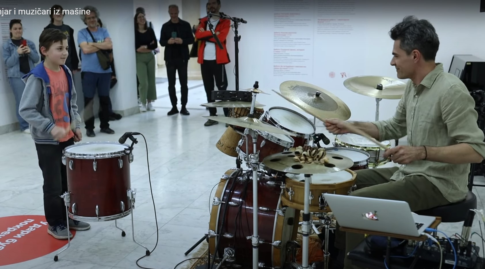

Saša Ranković performed the musical performance "Drummer and musicians from the machine" as part of the exhibition of scientific illustrations "Behind objectivity: visual metaphors in science", which, from May 15 until June 12, 2023, the Center for the Promotion of Science (CPN) organized in cooperation with the Kraljevo National MuseumWHY DON'T DRUMS PLAY "NOTES"?
The drumhead is a circular membrane. The vibration of a circular membrane is two-dimensional, and many vibration modes occur simultaneously. These patterns of membrane vibration push air molecules, creating the sound frequencies that we hear. What is specific to sound membranes is that these modes are not harmonic, meaning that the frequencies of higher modes are not multiples (products of the fundamental frequency and whole numbers) of the fundamental frequency, as is the case with a harmonic series. Due to this peculiar harmonic interplay, it is not easy to determine the pitch of drums, and a drum strike is more noise than tone. That's why we don't use drums to build melodies and harmonies in music, but for rhythm.
For this purpose, we use a microphone that transmits the audio signal to a regular tuner - a device that receives the audio signal and analyzes the fundamental frequency. The tuner needs to have MIDI output, i.e., it can pass on information about the established frequency via the MIDI protocol. This output represents the input for instruments such as piano, double bass, saxophone, guitar, and synthesizer installed on the computer as VST plugins. Their output is the sound we hear from the speakers simultaneously with the acoustic drums, creating the experience of listening to a live band.
The tuner "mistakes", and many tones happen accidentally - the drummer must "follow" the others! The tones that the instruments play are generated by the drums, but they are not uniquely defined as they would be with triggers - where a specific drum hit triggers a precisely defined event on the virtual instrument.
In such a designed process of converting the audio signal of acoustic drums into MIDI signal, there is an element of chance due to uncertainty about what the tuner will capture from the sound produced by the drums. (This is a consequence of the aforementioned non-harmonicity of the mode of vibration of the drumhead)." Changes in the drummer's playing are detected by the tuner and reflected in what the instruments play, and so on, in a loop - creating an ever-evolving musical experience.This is a consequence of the aforementioned non-harmonicity of the mode of vibration of the drumhead.Changes in the drummer's playing are detected by the tuner and reflected in what the vst instruments play, and so on, in a loop - creating ever-evolving musical expirience.
Explore the playlist below — recordings from the early days of this concept.